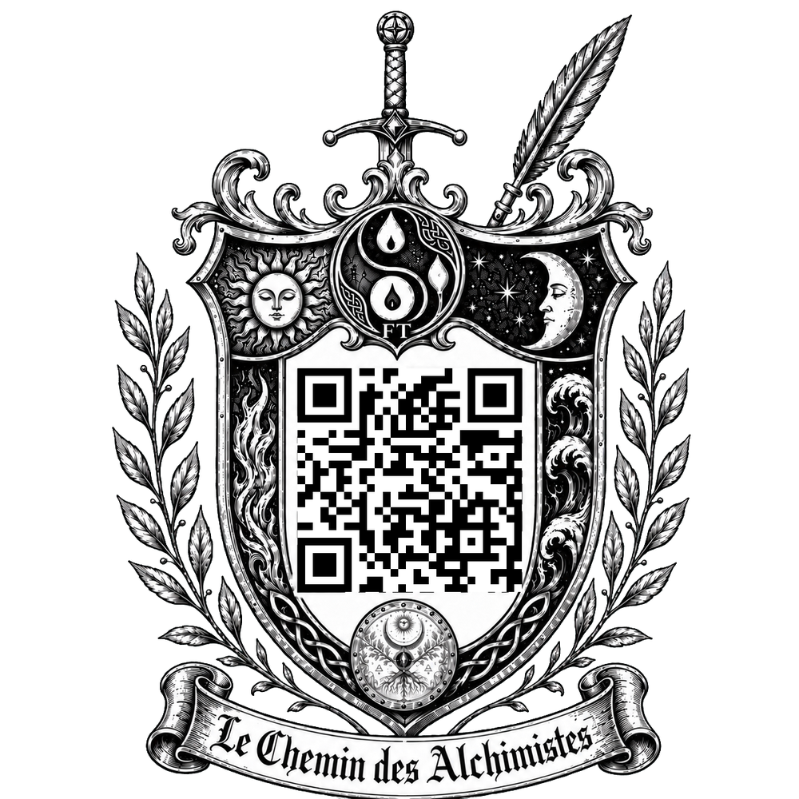

Chaque chapitre porte son blason. Dans le livre papier, il dissimule un QR code : on le scanne pour écouter la bande-son du chapitre. Touchez-le — ou lancez la vidéo ci-dessous — pour découvrir « Une lumière dans la nuit ».
Bande-son du chapitre — « Une lumière dans la nuit »
Chapitre 1
C’est dans cette heure incertaine, suspendue entre chien et loup, que Jean émergea de la lisière du bois.
Il venait d’avoir douze ans. Son corps, encore frêle mais noué par l’exigence d’une terre rude, ployait sous le fardeau. Un lourd fagot de bois mort, ramassé branche par branche à la force des poignets, lui écrasait l’épaule droite. La corde de chanvre brut, raidie par le gel naissant, sciait la toile usée de sa tunique et mordait sa clavicule. À chaque pas, son souffle se matérialisait en un bref nuage de vapeur blanche qui s’effilochait instantanément dans l’air coupant.
Le ciel du Beaujolais saignait ses dernières lueurs sur la vallée de Sainte-Paule. Ce crépuscule d’octobre 1312 ne ressemblait pas à une simple fin de jour, mais à un avertissement. Le soleil, avalé par la ligne de crête, ne laissait derrière lui qu’une estafilade rougeoyante, une plaie de feu s’étirant au-dessus de la cime décharnée des chênes. Puis, l’obscurité commença à ramper depuis le fond des combes, avalant les champs et les haies avec la lenteur implacable d’une marée noire.
Le froid n’était pas une simple température. C’était une présence physique, une entité métallique qui s’insinuait sous les vêtements, cherchait la chaleur de la peau et tentait de glacer le sang jusqu’à l’os. Jean pressa le pas. Ses sabots de bois frappaient la boue des sentiers, désormais figée par le gel en de profondes ornières coupantes comme du verre. Crac. Crac. Le bruit sec de sa marche était le seul son qui osait défier le silence absolu de la campagne.
Le monde entier semblait retenir son souffle. En redescendant vers les toits du village, l’enfant sentait peser sur lui une ombre bien plus lourde que la nuit. Les temps étaient incertains, et la vallée de Sainte-Paule n’était qu’un point insignifiant perdu dans un monde en proie aux tensions. C’était une terre frontière, coincée entre les mâchoires de puissances titanesques. À l’ouest, le royaume de France, insatiable et avide d’expansion, cherchait à tout dévorer, tandis qu’à l’est, le Saint-Empire germanique, moribond mais féroce, luttait pour ne pas s’effondrer. La guerre n’était plus une bataille lointaine, c’était un vent de fer constant qui soufflait sur les hommes, déchirant les frontières et les âmes.
Mais la pire des menaces ne portait pas d’armure. Jusqu’ici, dans cette région proche de Mâcon, l’abbaye bénédictine avait imposé son autorité avec une certaine douceur. L’ordre de saint Benoît, ancré dans sa règle simple de prière et de travail de la terre, offrait encore aux paysans un semblant de liberté et de respiration. Mais un brouillard toxique venait de s’abattre sur le royaume.
Les Franciscains, un ordre plus jeune et implacable, leur volaient lentement la vedette. Loin de l’humilité qu’ils revendiquaient, ces moines en bure sombre s’étaient mués en un pouvoir étouffant. Sous le masque de la miséricorde et de la pauvreté, ils imposaient une discipline glaciale, n’hésitant pas à punir et à écraser quiconque osait penser autrement. Ils n’étaient pas là pour sauver les âmes, mais pour dominer les hommes et maintenir un système injuste par la menace. Partout, leur doctrine se répandait comme un poison, noyant la lumière des esprits libres sous une chape de plomb. Les villageois de Sainte-Paule ne vivaient plus pour espérer, ils vivaient dans la terreur absolue d’attirer le regard de l’Inquisition, sachant qu’une simple accusation d’hérésie tombait comme une sentence de mort. Le ciel était un empire de nuages noirs, et l’Église, un tyran invisible qui contrôlait chaque souffle.
Jean resserra sa prise sur la corde gelée de son fagot. Face à cette noirceur qui engloutissait le monde, la seule lumière qui lui restait brûlait là-bas, en contrebas. Dans la chaleur étouffante et boisée de l’atelier de son père.
Il fallait rentrer. Vite.
Lorsqu’il franchit enfin le lourd portail de bois de la cour familiale et poussa la porte de l’atelier de son père, la transition fut d’une brutalité presque douloureuse.
Un mur d’air dense le heurta de plein fouet. L’espace était chauffé par un humble foyer où brulait les copaux dans quelques braises vestiges d’une buche ancienne, mais l’atmosphère y était saturée, vivante, embaumée par l’odeur puissante et âcre de la sève morte, du chêne vert fraîchement tranché et de la sciure accumulée. C’était le parfum de la création.
Jacques, son père, ne leva pas les yeux.
La carrure herculéenne du charpentier obstruait la faible lumière d’une lampe à huile en terre cuite dont la flamme vacillait sur l’établi. L’homme était un colosse, une montagne de muscles et de silence. Ses larges mains tenaient fermement le manche de frêne d’une erminette. Ces mains racontaient une histoire que sa bouche taisait : elles étaient couturées de cicatrices blanches, épaisses, laissées par le fer, le feu et les chaînes des geôles mameloukes. Jacques était un ancien frère du Temple. Un chevalier dont l’âme avait été broyée sur les sables sanglants de Saint-Jean-D’acre, et qui avait fui la folie meurtrière des hommes pour trouver refuge dans le silence du bois.
Chtack. Chtack.
Le fer tranchant de l’outil s’abattait sur la longue poutre maîtresse. Mais il n’y avait dans ce geste aucune violence, aucune de ces brutalités guerrières qui avaient autrefois régi sa vie. C’était une maîtrise millimétrée, presque caressante. Jacques ne forçait pas la matière. Il écoutait le grain du chêne, suivait le lit de ses veines invisibles, et d’un coup sec du poignet, arrachait une longue volute de bois clair, fine comme du parchemin, qui retombait en silence sur le sol de terre battue.
Chaque mouvement était une leçon de survie. Jacques incarnait cette force douce, cette énergie canalisée qui ne détruit pas mais transforme.
— Tu as pris du retard.
La voix du père gronda. Elle ne résonna pas dans la pièce, elle vibra directement dans sa large poitrine, profonde et rocailleuse. Les muscles de ses avant-bras, tendus comme les cordages d’un navire de guerre, roulaient sous la toile grossière de sa chemise retroussée.
Jean s’immobilisa près du seuil, laissant glisser son fagot qui heurta le sol dans un bruit sec. L’intimidation qu’imposait naturellement cet homme forgé dans l’acier était viscérale.
— Oui, murmura l’enfant, la gorge encore serrée par la morsure du gel extérieur. Le sol était dur. J’ai dû gratter longtemps la terre sous la haie des ronces. J’ai trouvé les racines de bardane et les feuilles de saule pour Maman.
Jacques suspendit son geste. Le tranchant de l’erminette s’arrêta à un cheveu de la poutre. Il tourna lentement la tête vers son fils. Dans la pénombre de l’atelier, la lueur jaune de la lampe creusait dramatiquement les sillons de son visage buriné. Son regard, d’ordinaire si minéral, se radoucit d’une infime fraction. Il savait la dureté du monde, il connaissait la morsure de la glace, et voir son fils s’y confronter sans se plaindre lui arrachait une fierté muette.
Soudain, le son lourd, profond et cuivré des cloches de l’abbaye lointaine traversa l’épaisseur des murs de pierre brute. L’angélus du soir. Les vibrations s’étirèrent dans l’air froid de la vallée.
Jacques posa son outil sur l’établi. Il essuya longuement la sciure collée à ses paumes sur le cuir tanné de son tablier, effaçant la poussière de ses cicatrices.
— Il est temps, dit-il, d’un ton sans réplique qui n’admettait aucune hésitation. Rentre. Ta mère et le feu nous attendent.
Ils traversèrent la cour à grandes enjambées, le père ouvrant la marche comme un brise-glace fendant la nuit. En poussant le lourd battant de chêne de leur chaumière, la véritable chaleur de la vie les engloutit.
L’âtre, immense et gavé de grosses bûches de hêtre sec, crépitait avec une fureur joyeuse. Les flammes dansaient, projetant de grandes ombres mouvantes et chaleureuses sur les murs de pierre. Et au centre de ce foyer, il y avait Marie.
Elle dégageait cette odeur terrienne et familière qui n’appartenait qu’à elle : un parfum d’humus, de romarin froissé, de fleurs séchées et de suif fondu. Ses mains, perpétuellement brunies et colorées par les sucs des simples qu’elle broyait du matin au soir pour soigner les femmes de la vallée, remuaient une lourde marmite de fonte noire suspendue par une crémaillère au-dessus des braises rougeoyantes.
Marie ne les accueillit pas avec de grands éclats de voix. Son amour ne s’exprimait pas dans des discours, mais dans la justesse de ses gestes. Elle offrait la chaleur comme un bouclier contre la cruauté de l’époque.
Ils s’attablèrent sur les lourds bancs de bois brut. Le repas commença dans un silence quasi monacal, seulement rompu par le rythme régulier des cuillères de bois raclant le fond des écuelles d’argile vernissée. Le bouillon était épais, miraculeux de réconfort. Chargé de fèves gonflées, de morceaux de lard salé et d’herbes amères, le liquide brûlant descendait dans l’œsophage de Jean, repoussant le sang vers ses extrémités mortifiées par le froid. Il sentait la vie palpiter à nouveau dans la pulpe de ses doigts. Le simple fait de manger en sécurité devenait, en cette année 1312, un privilège divin.
Cependant, à mesure que la chaleur engourdissait les corps, une tension poisseuse, presque électrique, commença à s’installer au-dessus de la table.
Jean l’observa d’abord dans le langage silencieux des corps qu’il apprenait à déchiffrer. Marie ne mangeait presque pas. Ses yeux noirs, habituellement si vifs, si pleins de cette lumière gitane qui avait fait chavirer le cœur du vieux Templier, fixaient les flammes avec une angoisse palpable. Sa respiration était trop courte. Ses doigts, tachés de vert, tripotaient nerveusement la couture rugueuse de son tablier de laine.
— Le Frère Ambroise est arrivé à Oingt, finit-elle par lâcher dans un murmure, comme si prononcer ce nom à voix haute risquait de l’invoquer dans la pièce.
La cuillère de Jacques s’arrêta à mi-chemin de sa bouche. Sa mâchoire se crispa, les muscles de ses tempes saillant sous la peau.
— Il sillonne la région, poursuivit Marie, la voix étranglée par une peur sourde qui s’infiltrait avec les courants d’air. On dit qu’il cherche des traces de l’Ordre dissous. Qu’il cherche des hérétiques à brûler. Les Dominicains ne laissent que des cendres derrière eux.
Le silence qui suivit fut effroyable. Dans la petite pièce, l’ombre des bûchers parisiens, les cris des anciens frères d’armes de Jacques consumés par les flammes de la vindicte papale, semblèrent soudain s’inviter à leur table. La menace n’était plus une rumeur lointaine, elle frappait à la porte de leur province.
— Pour l’instant, nous n’avons pas à nous inquiéter, répondit Jacques.
Sa voix était minérale, vide de toute inflexion de panique. Un cynisme froid, forgé par l’expérience de la survie. Il croisa ses bras puissants sur sa poitrine, plongeant son regard sombre dans les braises.
— La peur n’évite pas le danger, Marie. Trembler ne fera que nous désigner comme des proies, asséna-t-il avec ce pragmatisme absolu qui le caractérisait. Seul notre comportement fera la différence. Ils ont besoin de toi. Tu es la seule guérisseuse de ce pays, celle qui met leurs enfants au monde. Et je suis le seul charpentier capable de lever la charpente de leurs granges. Nous avons des connaissances qu’ils n’ont pas. Cela nous distingue, oui... mais cela nous protège. Si nous savons faire profil bas, et remercier publiquement la grâce de l’Église pour nos « dons ».
Jean sentit son estomac se contracter. L’enfant comprenait la stratégie de son père : porter le masque, devenir invisible dans la masse, s’aplatir pour laisser passer la tempête de fer.
Marie baissa les yeux vers son écuelle vide.
— Je suis inquiète, Jacques, murmura-t-elle, incapable de chasser l’angoisse. Avec ce qu’ils ont fait au chef de ton Ordre... ton passé est une marque au fer rouge. Si l’Inquisiteur fouille trop près...
Mais Jacques n’eut pas le temps de répondre.
BAM ! BAM ! BAM !
Des coups d’une violence inouïe heurtèrent la lourde porte de chêne de la chaumière. Le bois massif trembla sous l’impact, faisant sursauter Jean sur son banc.
Jacques se leva d’un bloc, la main glissant d’un réflexe conditionné de guerrier vers la large ceinture de cuir où reposait d’ordinaire sa lame. Ses yeux scrutèrent les interstices de la porte.
— Ouvrez ! Au nom du Seigneur Hugues, ouvrez ! La Dame est en danger !
La voix au-dehors était déchirée par l’essoufflement, couverte par le hurlement du vent et le crépitement d’une pluie glaciale qui venait de se lever brusquement sur Sainte-Paule.
La peur de l’Inquisition s’effaça instantanément pour laisser place à l’urgence de la chair. Marie n’hésita pas un dixième de seconde. Sa vocation était plus forte que ses terreurs. Elle repoussa brusquement la table, attrapa son lourd manteau de laine sombre accroché près du feu et le jeta sur ses épaules. Elle se précipita vers la réserve, saisissant le panier d’osier qu’elle préparait depuis des semaines pour cette éventualité précise. Ses doigts trouvèrent machinalement les petites fioles d’argile scellées à la cire : hysope couchée pour ouvrir les poumons, feuilles de saule séchées pour éteindre la douleur, lin broyé pour apaiser la fièvre.
Jacques tira la barre de fer et ouvrit la porte.
Un cavalier en armes se tenait sur le seuil, chancelant. La tempête fouettait son visage blême. Son lourd haubert de mailles grises ruisselait d’une eau glacée et noire. Derrière lui, dans la cour, son destrier massif piaffait et soufflait bruyamment, l’écume aux lèvres, les flancs soulevés par l’épuisement d’une course folle depuis la colline.
— Les couches ont commencé à l’aube, haleta le soldat, la voix brisée par l’urgence. Elle n’y arrive pas. Son souffle la quitte. Le Seigneur Hugues exige votre présence immédiate au donjon d’Oingt. C’est une question de vie ou de mort.
— Je viens, trancha Marie.
Elle ne posa aucune question. Elle s’avança vers le seuil, bravant le mur d’eau glacée qui s’engouffrait déjà dans la maison, faisant vaciller dangereusement la lumière des bougies.
Jacques posa sa main large et chaude sur l’épaule de sa femme. Leurs regards se croisèrent une dernière fois dans l’embrasure de la porte. Aucune parole ne fut échangée, car leurs âmes se comprenaient au-delà des mots. Il y avait dans les yeux noirs de Marie la conscience terrifiante que cette nuit d’hiver allait faire basculer le monde.
Elle s’arracha à la lumière du foyer, s’enfonçant dans les ténèbres battues par les rafales. Guidée par le destrier nerveux du soldat, elle disparut dans la nuit d’encre pour entamer sa longue ascension sur le chemin boueux qui serpentait vers le donjon d’Oingt.
Resté près du feu, Jean écouta le bruit des sabots s’évanouir dans le fracas de l’orage. L’enfant frissonna. Le froid venait de rentrer dans la maison, et avec lui, le pressentiment aigu qu’une tragédie irréversible venait de se mettre en marche.
La nuit avait avalé les collines du Beaujolais. Ce n’était pas une obscurité paisible, propice au sommeil des justes, mais une gueule noire et hurlante. La pluie, poussée par des bourrasques glaciales venues du nord, tombait en rideaux denses, cinglant la terre dure avec la violence d’une volée de flèches.
L’urgence interdisait la lenteur. Marie n’avait pas eu le temps de seller une monture ; elle avait été rudement hissée en croupe derrière le garde. Agrippée à la taille du soldat, elle subissait les foulées brutales du lourd destrier qui fendait la tempête. Le lourd manteau de laine sombre qu’elle avait jeté sur ses épaules s’était rapidement gorgé d’eau glacée, pesant sur elle comme une armure de plomb. À chaque bond puissant de l’animal, la boue argileuse giclait en gerbes froides, fouettant le bas de ses jambes. Le bruit mat et frénétique des sabots ferrés arrachant la fange rythmait leur ascension aveugle vers le donjon perché sur la colline. Elle serrait la mâchoire, les yeux plissés contre les rafales coupantes, les doigts de sa main gauche crispés à s’en faire mal sur les mailles glacées du haubert de son guide. De son bras droit, elle serrait convulsivement contre son flanc le panier d’osier, ce fragile sanctuaire de fioles d’hysope et de feuilles de saule qui constituait son unique arsenal contre la mort.
Tout en haut de la colline, défiant les éléments, se dressait le donjon d’Oingt. Forteresse de pierres dorées, vigie de la vallée, la bâtisse semblait ce soir auréolée d’une aura funeste. Les quelques torches accrochées aux murailles vacillaient frénétiquement, luttant pour ne pas être soufflées, jetant des lueurs spectrales sur les créneaux.
Lorsque les lourds vantaux de chêne de la poterne s’ouvrirent pour les laisser passer, Marie n’attendit pas que le garde prenne son manteau. Elle fonça vers la grande salle haute, guidée par l’écho étouffé de gémissements qui filtraient à travers les murs épais.
Dès qu’elle franchit le seuil des appartements privés, un mur d’air suffoquant la heurta. La chaleur y était insoutenable. Des braseros immenses rugissaient dans les âtres, gavés de bûches entières, asséchant l’air à l’excès. L’atmosphère empestait la sueur froide, le bois calciné, la cire fondue et l’odeur cuivrée du sang.
Au centre de ce brasier, un homme arpentait la pièce comme un ours en cage. Le Seigneur Hugues d’Oingt.
C’était un colosse, un descendant direct de l’ancienne lignée de Guichard, des bâtisseurs de forteresses à la carrure herculéenne. D’ordinaire, Hugues dégageait une autorité minérale, une assurance qui faisait plier l’échine des plus fiers chevaliers. Mais ce soir, l’armure de son arrogance était en miettes. Le craquement sinistre de ses bottes de cuir lourd sur les lattes du plancher trahissait une panique animale. Ses poings s’ouvraient et se fermaient dans le vide. Cet homme, qui avait droit de vie et de mort sur toute la vallée, se heurtait à l’unique adversaire qu’aucune de ses épées ne pouvait terrasser : la fragilité de la chair.
Lorsqu’il vit Marie apparaître, trempée, le visage rougi par la course, il se précipita sur elle avec une violence qui fit reculer les servantes pétrifiées le long des murs. Ses énormes mains d’ours s’agrippèrent aux épaules de la guérisseuse.
— Marie ! rugit-il, la voix brisée par une peur qui frisait la démence. Sauvez-la ! Je vous en supplie, faites quelque chose, elle s’en va !
— Lâchez-moi, Seigneur, ordonna Marie.
Sa voix n’avait pas tremblé. Ce n’était pas une suggestion, c’était un ordre. Elle repoussa fermement les mains du colosse. Dans cette pièce, les titres de noblesse s’effaçaient. Face à la naissance et à la mort, il n’y avait plus qu’une seule souveraine, et elle portait un tablier taché de sucs végétaux.
Elle s’avança vers la couche monumentale drapée de lourds velours sombres. Ce qu’elle y vit lui glaça le sang bien plus que la tempête extérieure.
Isabeau, la jeune duchesse de Savoie, n’était plus qu’un spectre. Sa peau, autrefois si vantée pour sa pâleur de porcelaine, avait pris la teinte livide et grisâtre de la cendre froide. Ses cheveux, trempés de sueur, collaient à son visage émacié. Ses yeux d’un bleu si clair, ce regard qui avait ensorcelé le Seigneur d’Oingt, étaient exorbités, fous de terreur.
Mais le plus terrifiant n’était pas ce que Marie voyait. C’était ce qu’elle entendait.
Isabeau se noyait à l’air libre. L’air épais et vicié du Beaujolais avait, depuis son arrivée, attaqué ses poumons fragiles de montagnarde. Son asthme, devenu féroce avec la grossesse, avait réduit ses bronches à de minces filets. À chaque tentative d’inspiration, sa gorge émettait un sifflement strident, un râle atrocement aigu, comme un soufflet de forge percé. Sa poitrine se soulevait dans des spasmes désespérés, mais l’oxygène refusait d’entrer.
Sous la fine toile de lin de sa chemise de nuit, son abdomen se déformait sous des contractions d’une brutalité tellurique. L’enfant qu’elle portait était l’héritier du sang de Hugues : massif, lourd, un géant en devenir, prisonnier du bassin trop étroit de sa frêle mère. C’était une aberration biologique, une guerre perdue d’avance entre le contenant et le contenu.
Marie jeta son manteau mouillé sur un coffre. Son esprit passa instantanément en état d’alerte maximale. Le temps s’étira. Chaque geste devint chirurgical.
— Ouvrez les fenêtres ! aboya-t-elle aux servantes.
— Mais il gèle à fendre les pierres ! gémit une vieille femme de chambre.
— Ouvrez, par tous les diables ! Elle étouffe ! Laissez entrer le froid ! Et apportez-moi de l’eau bouillante, tout de suite !
Un coup de vent glacé s’engouffra dans la chambre, faisant violemment vaciller les flammes des bougies, mais balayant d’un coup l’air stagnant. Marie plongea la main dans son panier d’osier. Ses doigts trouvèrent immédiatement la fiole d’argile scellée. Elle en cassa le col. L’odeur piquante, presque camphrée, de l’hysope couchée et de la menthe poivrée envahit l’espace.
Elle versa l’essence dans un bol d’eau bouillante qu’une servante venait de poser sur la table de chevet, et plaça le récipient fumant sous le visage d’Isabeau.
— Respirez ça, ma Dame. Inspirez la chaleur, murmura Marie en soutenant la nuque de la jeune femme. Laissez la vapeur ouvrir votre gorge.
Isabeau tenta d’aspirer, ses doigts maigres s’agrippant aux bras de Marie avec une force insoupçonnée, enfonçant ses ongles jusqu’au sang dans la chair de la guérisseuse. Le râle s’atténua légèrement. L’hysope dilatait les conduits respiratoires, offrant un maigre répit. Mais le véritable danger n’était pas l’air ; c’était la vie qui exigeait de sortir.
Une nouvelle contraction, monstrueuse, tordit le corps d’Isabeau en un arc de douleur. Ses talons frappèrent lourdement le matelas. Elle voulut hurler, mais seul un gémissement rauque franchit ses lèvres bleuries.
— Seigneur Hugues, reculez, ordonna Marie en repoussant le seigneur qui s’était approché, le visage ravagé par l’impuissance. Vous ne pouvez rien ici.
Marie écarta les draps trempés. L’odeur du sang frais, entêtante, métallique, lui frappa les narines. L’enfant était bloqué. La chair de la mère résistait, incapable de s’étirer davantage pour laisser passer les larges épaules du nouveau-né. C’était le point de rupture. L’équilibre naturel était brisé.
— Il faut que vous poussiez, Isabeau. Je vais vous aider, mais il faut que vous me donniez tout ce qui vous reste, souffla Marie, le visage à quelques centimètres de celui de la duchesse.
Marie plongea ses mains dans l’eau chaude, puis les positionna fermement sur le ventre tendu de la parturiente. Elle n’allait pas prier ; elle allait utiliser la mécanique des corps. Utilisant tout son propre poids, ses pieds ancrés dans le plancher de chêne, elle appuya sur le sommet de l’abdomen pour forcer la descente de l’enfant, accompagnant le spasme musculaire d’Isabeau.
La lutte fut un massacre silencieux. Une bataille charnelle dans la chaleur moite de la chambre. La sueur coulait dans le dos de Marie, piquant ses yeux. Sous ses paumes, la peau de la duchesse était brûlante, prête à se déchirer.
— Maintenant ! hurla Marie.
Isabeau contracta son corps avec l’énergie du désespoir, puisant dans les ultimes réserves de son âme. Il y eut un bruit sourd, humide, terrifiant. Celui de la chair qui cède, des tissus qui se déchirent sous une pression insoutenable.
Un flot de sang tiède, d’un rouge écarlate aveuglant, inonda les draps blancs, éclaboussant le tablier de Marie et coulant sur le bois du lit.
Et dans ce déluge de fer et de pourpre, l’enfant parut.
Marie le saisit. Il était énorme, glissant, la peau violacée. Avant même qu’elle n’ait pu lui dégager la bouche, le nourrisson ouvrit les yeux, serra ses minuscules poings avec une fureur aveugle, et laissa éclater un hurlement rocailleux, puissant, victorieux. Un cri de vie qui domina instantanément le fracas de l’orage à l’extérieur. Un garçon. L’héritier du sang d’Oingt venait de forcer son entrée dans le monde.
Un soupir collectif, lourd comme un effondrement, traversa la pièce. Les servantes se signèrent, en larmes. Hugues, les genoux soudain vidés de toute force, tomba lourdement sur le sol de bois, enfouissant son visage dans ses mains énormes. Ses épaules tressautaient. Il pleurait, brisé par le soulagement.
Mais près du lit, Marie ne pleurait pas. Elle ne souriait pas. Son instinct, aiguisé par des années à côtoyer l’abîme, hurlait au désastre.
Ses mains étaient poisseuses, rouges jusqu’aux poignets. Le sang d’Isabeau ne s’arrêtait pas. Il coulait à flots continus, pulsant au rythme faiblissant de son cœur, imbibant les matelas, gouttant sinistrement sur le plancher dans un ploc, ploc écœurant que Marie seule semblait entendre sous les cris du bébé.
— Prenez-le ! aboya-t-elle en fourrant brutalement l’enfant hurlant dans les bras de la vieille servante. Des linges ! Donnez-moi tous les linges secs que vous avez !
Le ton de panique absolue dans la voix de la guérisseuse figea la joie naissante. Hugues releva brusquement la tête, les yeux écarquillés.
Marie plongea des masses de tissus propres entre les jambes de la jeune mère, pressant de toutes ses forces, écrasant ses poings pour tenter d’endiguer l’hémorragie interne. Le bassin s’était disloqué ; les veines, déchirées par le passage du géant, se vidaient avec une rapidité foudroyante. Le corps d’Isabeau se vidait de sa chaleur, de son essence.
— Restez avec moi, ma Dame, murmura Marie, la voix étranglée par l’effort, pompant de tout son poids sur la plaie invisible. Ne fermez pas les yeux !
Mais Isabeau ne la regardait plus. Ses pupilles, immenses, d’un bleu désormais délavé et vitreux, fixaient les lourdes poutres du plafond. Son torse si frêle, qui avait tant lutté pour capturer l’air, s’affaissa doucement. Le sifflement aigu de ses poumons cessa. Ses traits, tordus par l’agonie depuis le lever du jour, se détendirent subitement en un masque d’une sérénité absolue.
Le sang cessa de pulser. La pression sous les mains de Marie disparut. L’enveloppe charnelle était vide.
Le silence qui suivit fut d’une lourdeur insoutenable, coupé seulement par les vagissements lointains du nouveau-né qu’on emportait dans l’antichambre.
Marie se redressa lentement. Ses bras pendaient le long de son corps, ses mains ruisselantes de rouge. Son souffle était court. Elle avait échoué. Les forces de la nature, cruelles et mathématiques, avaient réclamé leur tribut. La vie avait simplement changé de vaisseau.
— Non...
Le murmure de Hugues s’éleva du sol, rauque, incrédule. Il se releva lourdement, titubant comme un homme ivre, et s’approcha du lit. Il fixa les draps souillés, le visage d’ange de sa femme, le sang sur les mains de la paysanne.
— Non ! hurla-t-il soudain, d’un cri bestial qui fit trembler la flamme des torches. Isabeau ! Reste avec moi ! Je t’ordonne de rester !
Il se jeta sur le corps sans vie, bousculant Marie avec la violence d’un taureau furieux. Il agrippa les épaules de la jeune morte, la secouant frénétiquement, comme si la force brute de son amour pouvait relancer la mécanique cardiaque. Ses larmes ravinèrent son visage de pierre, tombant sur la chemise de nuit maculée.
— Seigneur... murmura doucement Marie en posant une main prudente sur le bras du colosse. Elle n’est plus là. Son âme est partie.
Hugues se figea. Il lâcha le corps inerte, qui retomba lourdement sur les coussins. Lentement, avec la rigidité d’un automate, il pivota vers la guérisseuse.
Marie recula d’un demi-pas. Un frisson glacé, instinctif, lui remonta le long de la colonne vertébrale.
L’homme qui la fixait n’était plus le seigneur altier, ni même le mari terrifié d’il y a quelques minutes. C’était une créature brisée, vidée de sa lumière. Ses yeux, injectés de sang et noyés de larmes, ne reflétaient plus la raison. Un gouffre noir, affamé et destructeur, venait de s’ouvrir dans ses pupilles. Dans la psychologie humaine, quand la douleur du deuil est trop vaste pour être contenue par le cœur, elle mute. Elle cherche un coupable. Elle cherche un réceptacle pour déverser sa haine, ou, pire encore, un objet de transfert pour son amour mutilé.
Marie venait de passer des heures penchée sur le corps de sa femme. Elle était la dernière à avoir touché Isabeau vivante. Elle sentait le sang de la défunte poisser sur sa peau. Aux yeux de cet homme dont la raison venait de sombrer, elle devenait instantanément l’incarnation physique de cette nuit tragique.
— Prenez soin de votre fils, Seigneur Hugues, tenta Marie d’une voix blanche, maîtrisant le tremblement de sa propre mâchoire. C’est la dernière part d’elle qui respire encore. C’est le don qu’elle vous laisse.
Hugues ne regarda pas vers la porte par laquelle son héritier venait de sortir. Son regard resta vrillé sur Marie, s’accrochant à elle avec une fixité presque obscène, comme un naufragé s’agrippant à un bois de dérive couvert d’épines. Il ne prononça pas un mot. Seul le bruit de sa respiration lourde et saccadée remplissait la pièce macabre.
Marie attrapa son panier, essuya machinalement ses mains rouges sur son tablier de laine, et se détourna sans faire de révérence. Elle devait sortir de ce château. L’orage, dehors, battait toujours son plein, mais l’air glacé de la nuit lui semblait désormais infiniment moins dangereux que l’ombre vénéneuse qui venait de naître dans la chambre du donjon.
Alors qu’elle descendait l’escalier à vis en courant presque, Marie sut, avec une prescience foudroyante, que sa victoire sur la naissance portait en elle le germe de sa propre destruction. L’hiver ne faisait que commencer, et les fantômes, elle le savait, ne dorment jamais vraiment.
Le lendemain matin, l’aube peina à percer. Le soleil refusa de se montrer, remplacé par une clarté malade et diffuse qui bavait à travers une couche épaisse de nuages gris. Un linceul de brume, lourd et poisseux, s’était accroché aux toits de tuiles rondes de Sainte-Paule. L’air était si vif qu’il piquait les poumons comme une poignée d’aiguilles de glace.
Jean avait avalé en hâte un reste de bouillie d’avoine, durcie par le froid de la nuit. Solidement calé dans la ceinture de toile de sa tunique, son lourd couteau pliant en acier de Damas, héritage silencieux de son père, pesait contre sa hanche. Il empoigna son bâton de cornouiller, poli par des centaines d’heures de marche, et poussa son petit troupeau de chèvres à travers les herbes givrées, en direction des collines qui surplombaient le village.
Chaque expiration de l’enfant formait un nuage rythmique qui se dissolvait dans le brouillard. L’ascension exigeait un effort constant, mais Jean trouvait un réconfort viscéral dans la régularité de la marche. Loin des murs oppressants de la chaumière, loin du silence lourd qui avait suivi le départ en urgence de sa mère la veille au soir, la nature engourdie lui offrait l’espace dont il avait besoin.
Arrivé sur un éperon rocheux dégagé, le jeune gardien laissa ses bêtes s’éparpiller pour gratter la terre dure à la recherche de quelques pousses amères. Il s’appuya sur son bâton et plissa les yeux, scrutant la vallée en contrebas. Son regard, affûté par l’observation des bêtes et des saisons, repérait le moindre mouvement anormal.
Soudain, une tache sombre attira son attention sur le sentier boueux qui serpentait depuis la plaine pour remonter vers Sainte-Paule.
Une araignée noire rampait lentement vers son village.
En plissant davantage les paupières, Jean distingua les contours de l’équipage. Quatre cavaliers avançaient à un rythme mécanique, implacable. Ils étaient engoncés dans de lourds manteaux sombres, le fer de leurs casques reflétant la clarté mate du ciel. Ils encadraient une masse plus lourde, plus sinistre. Une charrette noire, massive, taillée dans un bois brut. Ses immenses roues cerclées d’acier écrasaient les ornières avec une régularité morbide. À travers les ouvertures latérales de la carriole, taillées en forme de croix grossières, on devinait moins une fonction de transport qu’une promesse d’enfermement.
Le garçon de douze ans ne connaissait pas encore les rouages politiques du royaume, ni les purges qui ensanglantaient les places de Paris ou de Lyon. Mais son corps, bien plus sage que son esprit, réagit. Le poil de ses avant-bras se hérissa sous sa laine. Ses chèvres elles-mêmes avaient cessé de brouter, les oreilles dressées vers la plaine. Cet équipage ne dégageait aucune vie, aucune hâte. C’était une machine en marche. Jean frissonna, resserra son manteau autour de ses épaules, et préféra tourner le dos à la vallée pour s’enfoncer plus profondément dans les bois.
En bas, dans les ruelles étroites de Sainte-Paule, l’odeur âcre des cheminées mal ramonées saturait l’air matinal.
Marie marchait d’un pas lourd. Elle était rentrée d’Oingt au cœur de la nuit, les bras vides, l’âme essorée par la mort d’Isabeau et terrifiée par le gouffre qu’elle avait vu s’ouvrir dans les yeux du Seigneur Hugues. Ses muscles étaient douloureux, sa robe sentait encore le sang séché et l’hysope. Pourtant, le repos lui était interdit. Deux autres femmes attendaient ses soins dans la vallée.
Elle serra l’anse polie de son panier d’osier, ce modeste arsenal d’écorces et de racines qui constituait tout son pouvoir, et s’engagea sur les pavés inégaux menant à l’église.
En longeant la façade romane et trapue de l’édifice, une anomalie stoppa net sa marche. Les lourds battants de chêne sculpté, qui gardaient le sanctuaire fermé aux morsures de l’hiver, étaient grand ouverts sur la pénombre glaciale de la nef. Un fait totalement inaccoutumé à cette heure matinale.
Sur le parvis, un homme se tenait immobile. C’était le père Thibaut.
D’ordinaire, le vieux curé du village était une figure débonnaire, un homme rond, à la voix chantante, qui distribuait les absolutions avec la même générosité qu’il partageait le vin nouveau. Mais ce matin-là, l’homme qui se tenait devant Marie semblait s’être tassé sur lui-même, comme si on l’avait vidé de sa substance.
Son visage était d’une pâleur de cire. Ses mains, couvertes de gerçures rougies par le froid, tremblaient d’un spasme incontrôlable en serrant fiévreusement un lourd bréviaire contre sa poitrine. À trois pas de distance, Marie capta l’odeur qui émanait de lui. L’odeur acide, rance, de la sueur de peur. La véritable terreur.
— Que se passe-t-il, mon père ? demanda-t-elle, la voix blanche, l’instinct immédiatement en alerte.
Thibaut sursauta comme si on venait de le frapper. Il balaya l’air d’un geste saccadé de la main, refusant obstinément de croiser le regard pénétrant de la guérisseuse.
— Fuyez cette place, femme, cracha-t-il dans un murmure précipité, l’haleine courte, écorchant ses propres mots. Ne restez pas là.
— De quoi parlez-vous ?
— Le Frère Ambroise... L’Inquisiteur, balbutia le prêtre, jetant des regards affolés vers l’entrée du village. Il passe le pont de la rivière à l’heure où je vous parle. Il vient à Sainte-Paule. Il cherche l’hérésie. On dit qu’il a déjà des dénonciations. Cachez vos herbes, cachez vos savoirs... Rentrez chez vous et ne dites mot !
Le cœur de Marie heurta violemment ses côtes. Une décharge de glace pulsa dans ses veines, figeant son sang.
L’Inquisition.
Le mot ne désignait pas un tribunal juste, mais une bête aveugle et affamée. Marie connaissait trop bien la tournure que prenaient ces visites. Soigner les maux de la chair était une tâche noble tant que la guérison suivait. Mais l’échec portait un nom bien plus dangereux que la simple incompétence. Il suffisait qu’une patiente perde la vie en couches, ou qu’un enfant naisse sans souffle – comme cela venait de se produire la nuit même à Oingt – pour que le vent tourne. La gratitude des villageois, si prompte à l’encenser la veille, se muerait instantanément en suspicion. Les regards se fuyants. Les murmures enflant. Et bientôt, sur toutes les lèvres tremblantes, un mot se formerait, définitif et mortel : Sorcière.
Dans son panier, ses feuilles de sauge, son millepertuis, son hysope tachée de sang devenaient soudain des preuves accablantes d’un pacte avec le Diable aux yeux d’une justice qui cherchait des coupables pour justifier son existence.
Elle ne posa aucune autre question. Elle pivota sur ses talons et pressa le pas vers la lisière du village. Son esprit tournait à vide. Pour masquer le tremblement incontrôlable de ses propres mains, elle s’accroupit brusquement près du talus. Frénétiquement, elle fouilla les buissons givrés et arracha à l’ongle, dans la terre dure, de larges poignées d’orties sauvages. La brûlure fulgurante des épines urticantes sur la chair nue de ses doigts la fit grimacer, mais cette douleur physique, aiguë et bien réelle, était son seul ancrage. Le seul rempart pour empêcher son esprit de basculer dans la panique pure.
À l’autre bout de la place, dans l’atelier de menuiserie, le temps n’avait pas encore suspendu son vol.
Jacques venait d’avaler un bol de bouillon tiède et s’était remis à son ouvrage. Le réconfort minéral de l’artisanat l’enveloppait. Son lourd rabot de fer et de hêtre glissait sur une longue poutre maîtresse avec un sifflement régulier. À chaque passage, un ruban de bois clair s’enroulait sur lui-même, dégageant une douce odeur de sève séchée, avant de choir sur le tapis de sciure dorée qui recouvrait la terre battue.
C’était un geste parfait. Un travail d’équilibre.
La journée commençant, une anomalie brisa l’harmonie de l’atelier. Non pas un son, mais une vibration sourde. Une onde qui remonta depuis les profondeurs de la terre battue, traversa les semelles de ses bottes de cuir épais, et se propagea le long de ses jambes.
Le rythme lourd, implacable, de sabots lourdement ferrés frappant les pavés inégaux de la place centrale de Sainte-Paule.
Jacques suspendit son geste. Ses larges épaules se tendirent.
Mêlé à la cadence militaire des chevaux, un autre bruit vrillait l’air matinal. Un grincement aigu, atroce, insupportable. Celui d’un énorme essieu de bois non graissé, ployant sous le poids d’un chargement massif, hurlant à chaque tour de roue.
Le charpentier posa lentement son outil sur l’établi. Avec la précision d’un fauve humant le danger, il essuya longuement la poussière de bois collée sur ses paumes calleuses, frottant ses paumes contre le cuir de son tablier. Son visage, d’ordinaire impassible, se ferma comme une citadelle assiégée. Il s’avança vers l’embrasure de sa porte, occupant par sa carrure herculéenne toute la largeur du cadre.
Sur la petite place de Sainte-Paule, un phénomène étrange se produisit. Au moment précis où l’équipage noir déboucha de la ruelle principale, un immense nuage de suie, lourd et gonflé de givre, vint occulter le soleil naissant. La lumière chuta d’un coup. Le vent, qui soufflait doucement sur les tuiles, mourut net. Parfois, la nature semble conspirer avec la folie des hommes, offrant aux tragédies qui s’amorcent le décor dramatique de leurs futures exactions.
La charrette noire, encadrée de ses quatre gardes en hauberts de mailles, s’immobilisa au centre exact de la place. Les chevaux de guerre s’ébrouèrent bruyamment, expulsant de leurs naseaux de longs jets de vapeur brûlante, empestant la sueur acide et l’huile d’arme.
Un silence de mort s’abattit sur les villageois qui, attirés par le fracas, s’étaient figés sur les pas de leurs portes, pétrifiés.
Du plateau de bois brut de la charrette, un homme commença à descendre.
Il ne sauta pas. Il posa son pied sur le sol avec une lenteur calculée, avec la lourdeur et la finalité de la dernière pierre scellant un tombeau.
C’était le Frère Ambroise.
Il portait une immense robe de bure sombre, tissée dans une laine brute d’un brun si profond et lourd d’humidité qu’elle avalait la lumière, paraissant aussi noire que les ténèbres. On pouvait l’assimiler instantanément à un immense corbeau..., dont la robe grossière et l’épaisseur étouffaient toute humanité. Ce n’était pas le vêtement d’un moine cherchant l’humilité de Dieu, mais l’armure d’un fonctionnaire de la terreur. Son visage était un bloc de granit grisâtre, ses lèvres deux lignes d’ombre exsangues. Ses yeux, deux billes de jais d’une fixité reptilienne, froids et méthodiques, commencèrent à balayer l’assistance.
Depuis le seuil de son atelier, Jacques le jaugea. L’ancien Templier connaissait l’odeur des hommes de guerre, la fureur aveugle des combattants de la foi. Mais cet homme n’était pas un soldat enflammé par la passion divine. C’était un clerc de la mort. Ambroise ne regardait pas la foule avec la colère de celui qui cherche l’hérétique ; il la disséquait avec la certitude de celui qui allait en trouver un. Pour lui, tout homme était une tumeur en devenir. Il suffisait de trancher assez profond pour découvrir la faute.
À ses côtés, le destrier le plus lourd recula d’un pas pour laisser descendre la seconde figure de l’équipage.
Un colosse. Une montagne de chair, de cuir bouilli et de mailles de fer. Il dépassait d’une tête tous les hommes du village. Un énorme glaive à deux mains, logé dans un fourreau noir, pendait à sa hanche, raclant les pavés à chacun de ses pas. Il n’avait ni l’allure d’un homme d’Église, ni la prestance d’un chevalier. Il avait la gueule et la posture du bourreau, de l’artisan des basses œuvres dont la seule raison sociale était l’application de la contrainte physique.
L’homme s’avança d’un pas lourd, ses mailles cliquetant lugubrement dans le silence absolu de la place. Il déroula un épais parchemin, scellé de cire rouge, et gonfla sa poitrine monumentale.
— Oyez, manants de Sainte-Paule !
Sa voix rocailleuse, puissante comme un éboulement de pierres, explosa contre les façades du village. Les vitres de parchemin et les volets de bois semblèrent trembler sous l’onde de choc.
— La Sainte Mère l’Église vient à vous pour offrir le repentir ! hurla -t-il, son regard défiant quiconque de bouger le moindre cil. Voici le Frère Ambroise, mandaté par le Très-Haut et les évêchés, envoyé pour bénir vos péchés et expurger l’hérésie qui rampe dans l’ombre de vos toits ! Dieu est la seule foi, et l’Église sa seule justice !
Un murmure parcourut l’assemblée. Non pas un murmure de contestation, mais un frisson collectif, le gémissement pitoyable d’un troupeau qui sent l’odeur de l’abattoir. Les mères resserrèrent convulsivement leurs bras autour des épaules de leurs enfants. Les hommes, d’ordinaire si prompts à jouer du torse à la taverne, baissèrent les yeux vers la boue, espérant disparaître, priant pour que le regard d’encre de l’Inquisiteur glisse sur eux sans s’arrêter.
Frère Ambroise fit alors un unique pas en avant.
Ses mains restèrent jointes sous son étoffe rugueuse, parfaitement dissimulées. Il ne vociférait pas, lui. Il n’en avait pas besoin. Lorsqu’il prit la parole, sa voix fut basse, égale, presque douceante, dépourvue de la moindre inflexion de colère. Mais cette douceur était celle de la lame du rasoir avant l’entaille. Une voix qui portait sans forcer, s’insinuant dans le canal auditif comme un filet d’eau glacée.
— Repentez-vous, murmura le prêcheur noir.
Son regard balaya la place, s’attardant une fraction de seconde sur la haute silhouette de Jacques, avant de poursuivre sa dissection méticuleuse du reste de la foule.
— La foi véritable vous appelle. Mais je sais que la lumière de Dieu ne pénètre pas aisément tous les foyers. Je sais que des rumeurs, des maux invisibles et des pratiques contraires à la volonté céleste circulent ici.
Il marqua une pause, calculant le poids du silence.
— Les murmures de vos secrets sont venus jusqu’à nous. Vos pratiques impies. Vos guérisons douteuses. Vos abris offerts aux damnés. Ceux qui cachent le mal partagent son châtiment. Je suis venu séparer le bon grain de l’ivraie. Et soyez certains... que le feu saura reconnaître les siens.
Marie venait de quitter la chaleur étouffante de la chaumière où elle venait d’assister sa patiente. Ses doigts rougis par le froid gardaient l’odeur verte et piquante des orties sauvages qu’elle avait infusées pour fortifier le sang de la jeune mère. En s’engageant sur le chemin de terre durcie par le givre pour regagner le centre de Sainte-Paule, un frisson glacé la parcourut. Ce n’était pas seulement la morsure du vent de ce matin d’hiver. C’était le silence.
Le cœur du village, d’ordinaire résonnant du fracas des sabots, des cris d’enfants et du sifflement des rabots, était plongé dans un mutisme de tombeau.
En débouchant sur la place principale, elle comprit. Une foule compacte, immobile, s’était agglutinée face à la sinistre charrette noire. L’instinct en alerte, Marie serra convulsivement la poignée de son panier d’osier et se glissa silencieusement entre les corps raidis de ses voisins, jusqu’au premier rang.
Les yeux du moine, deux billes de jais insondables, froids et méthodiques, glissèrent sur les visages fuyants des hommes, sur les mères protégeant leurs petits. Et soudain, alors que Marie venait juste d’émerger de la masse des villageois, le regard de l’Inquisiteur s’arrêta net.
Il s’accrocha à elle.
Ambroise leva lentement le bras. Un doigt long, pâle et sec, se tendit vers la guérisseuse comme la pointe d’une lance.
— Toi, femme, déclara-t-il.
Sa voix n’était pas un cri. Elle était lisse, monocorde, pénétrant l’air glacé avec la précision d’un scalpel. Marie sentit le sang déserter son visage. Les regards des villageois, si prompts à l’encenser lorsqu’elle les guérissait, se détournèrent d’elle avec terreur. Elle savait ce qui l’attendait : à l’instant même où ce doigt accusateur se braquait sur ses herbes et ses remèdes, elle devenait la cible de la pire des condamnations.
Dans l’embrasure de son atelier, à quelques pas de là, l’air parut soudain se figer.
Jacques n’était plus le charpentier silencieux. Le masque de l’artisan venait de se fissurer pour laisser ressurgir l’ancien Templier. Si ce corbeau de l’Église touchait à un seul cheveu de sa femme, il lui briserait la nuque. Il fit un pas lourd en avant, sortant de l’ombre de son atelier, les poings serrés à s’en faire blanchir les jointures.
Ambroise capta le mouvement du colosse. Son œil noir jaugea immédiatement la menace mortelle de ce charpentier prêt à exploser. L’Inquisiteur esquissa un rictus imperceptible. Le piège de la terreur venait de se refermer sur Sainte-Paule.
— On murmure que tu manipules les forces de la nature. Que tu te joues de la vie et de la mort, usant de procédés qui ne sauraient être que l’œuvre du Démon.
Le mot frappa le village comme la foudre. Démon. L’accusation suprême. Elle savait comment cette effroyable mécanique fonctionnait : la veille, elle n’avait pas pu sauver la Dame d’Oingt. Aujourd’hui, l’Inquisition, par calcul ou par opportunisme, transformait cet échec charnel en crime spirituel.
— Je ne fais que soigner, murmura Marie, la gorge serrée, luttant pour que sa voix ne se brise pas. Ce ne sont que de simples plantes que Dieu a fait pousser sur notre terre.
— C’est ce que nous vérifierons, trancha Ambroise d’un ton coupant. Que l’épreuve de l’eau décide si ton âme est pure ou damnée.
L’ancien Templier, forgé dans la fournaise de Saint-Jean-d’Acre, se redressa de toute sa hauteur. L’instinct archaïque du combat inonda ses veines. Sa main droite, large et calleuse, glissa machinalement vers sa large ceinture de cuir, cherchant une lame qui n’y était plus.
Qu’importe l’homme d’armes. Qu’importe les cavaliers. Il déclencherait un bain de sang.
— Laissez là tranquille, elle ne fait que soigner !
Ambroise senti l’intention. L’inquisiteur mesura instantanément la menace : cet artisan ne dégageait pas la peur soumise d’un paysan, mais la tension mortelle d’un fauve prêt à bondir.
— Tais-toi, artisan, cracha Ambroise avec un mépris calculé, à moins que tu ne veuilles partager son sort ou goûter aux flammes purificatrices.
L’homme d’armes en cotte de mailles fit un demi-pas, dégainant son glaive de trois bons pouces dans un crissement d’acier menaçant.
Jacques se figea. Le silence de la raison, durement appris dans les geôles mameloukes, heurta sa fureur. Il n’était pas seul. Tuer cet inquisiteur aujourd’hui signerait l’arrêt de mort de Marie, et surtout, celui de Jean. Il devait avaler sa rage. Il devait absorber le poison de l’humiliation pour que sa famille survive. Ses poings se serrèrent à s’en faire saigner les paumes, mais il s’arrêta.
Ambroise sourit intérieurement. Le mâle dominant était soumis. Il se retourna vers Marie pour ordonner son arrestation.
Mais Sainte-Paule n’était pas une ville docile. C’était un village de la terre.
Un bruit sec résonna sur les pavés. Tlac. Tlac.
Du fond de la foule pétrifiée, une silhouette voûtée s’extirpa. Une vieille femme, enveloppée dans un châle mité, s’avançait avec difficulté en s’appuyant sur une canne de bois tordu. Ses mains étaient rongées par l’arthrite, mais son regard était flamboyant. Elle se plaça délibérément entre l’inquisiteur et la guérisseuse.
— Cette femme a sauvé mon fils ! s’écria la vieille, sa voix chevrotante brisant le silence de plomb avec l’audace de ceux qui n’ont plus rien à perdre. Le mal de l’hiver lui rongeait les poumons, et elle a ramené le souffle dans sa poitrine ! S’il y a de la sorcellerie dans ce monde, alors c’est la sorcellerie du bien !
L’homme d’armes leva son poing ganté de cuir pour frapper l’insolente.
— Arrête.
L’ordre d’Ambroise claqua comme un fouet. Le colosse s’immobilisa.
L’Inquisiteur était un calculateur hors pair. Il voyait ce que le soldat stupide ignorait : le courage de la vieille femme venait d’agir comme une étincelle sur de la paille sèche.
Autour d’eux, les villageois, honteux de leur propre lâcheté quelques secondes plus tôt, relevaient la tête. Des murmures d’approbation s’élevaient. Un forgeron fit un pas en avant. Une lavandière resserra son emprise sur son battoir. Les regards fuyants devenaient fixes, sombres. Le groupe faisait bloc. Le troupeau apeuré venait de se muer en une meute solidaire.
Ambroise grimaça intérieurement. Tenter de noyer la guérisseuse aujourd’hui, face à une foule hostile et chauffée à blanc, provoquerait une émeute. Ses hommes pourraient tuer quelques paysans, certes, mais ils finiraient lynchés sous le nombre. Surtout, massacrer des innocents sans procédure officielle ruinerait son image de justice divine auprès de ses supérieurs à Lyon. Le moment n’était pas propice. Le fruit n’était pas mûr.
Lissant les plis épais de sa bure noire avec une lenteur exaspérante, il ravala son attaque.
— La foi du peuple est une force aveugle que même l’Église se doit parfois d’éclairer avec patience, déclara-t-il, les mâchoires serrées. Nous y veillerons.
Il fit volte-face pour regagner la lourde charrette noire.
C’est à cet instant précis que l’histoire intime d’Ambroise bascula.
Avant de poser le pied sur le marchepied de bois, il jeta un dernier regard par-dessus son épaule vers la femme qu’il venait d’épargner temporairement. Marie le fixait. Et dans ce regard, il n’y avait ni soumission, ni gratitude. Il y avait une fierté indomptable, une lumière farouche, la puissance vibrante d’une femme ancrée dans la terre et dans la vie.
Le choc fut d’une violence insoutenable.
Ambroise, l’homme de glace, l’ascète qui s’était bâti une forteresse de haine et de contrôle depuis l’enfance pour étouffer ses propres émotions, sentit une fulgurance lui traverser le ventre. Une chaleur interdite. Une douceur brutale qui heurta son dogme de plein fouet. Les grands yeux sombres de Marie venaient de percer son armure.
Pour lui, qui ne connaissait de la foi que l’ascétisme et la souffrance, cette attirance foudroyante était inconcevable. C’était la morsure de l’Eros, la passion brute, charnelle, destructrice, s’immisçant dans les failles de sa propre solitude.
Il en eut le souffle coupé. Son cœur heurta violemment ses côtes. Paniqué par la sensation physique qui l’envahissait, par cet éveil des sens qu’il jugeait diabolique, son esprit torturé muta instantanément cet attrait en haine pure. S’il désirait cette femme, c’est qu’elle l’avait ensorcelé. Elle devenait le Mal incarné. Le poison qu’il devait à tout prix purger de la création.
Le scrupulus venait de s’enfoncer dans sa chair. Cette écharde invisible, ce grain de sable dans la sandale de l’inquisiteur qui allait le faire boiter de douleur, de folie et d’obsession, jusqu’à ce qu’il ne détruise Sainte-Paule par les flammes.
Il s’engouffra dans la charrette, le visage blême et baigné de sueurs froides, fuyant le regard de la guérisseuse comme on fuit les flammes de l’Enfer.
Le convoi noir s’ébranla dans un grincement d’essieux lugubre, quittant la petite place de Sainte-Paule pour redescendre vers la vallée.
Le nuage lourd qui masquait le soleil sembla s’étirer, laissant filtrer un fin rayon de lumière dorée sur les tuiles mouillées du village. Le silence s’étira encore, puis une longue expiration collective secoua la foule. Jacques traversa la place à grandes enjambées et posa sa main massive, tremblante d’adrénaline, sur l’épaule de sa femme.
— Tu vois, murmura-t-il, la voix rocailleuse, les miracles existent parfois.
Marie posa sa propre main sur les doigts calleux de son mari. Elle sourit faiblement, les yeux embués par le contrecoup de la terreur.
— Oui, répondit-elle. Et parfois, ils viennent simplement de la force d’être ensemble.
La petite place retrouvait peu à peu son tumulte quotidien. Les murmures se transformaient en discussions agitées. Mais, cachée dans le mouvement de la foule, Marie sentait encore le regard de l’Inquisiteur brûler sur sa peau. Elle savait lire le corps des hommes, et ce qu’elle avait perçu chez le moine en bure noire juste avant son départ n’était pas de l’abandon. C’était le recul calculé de la vipère avant l’attaque. L’orage n’était pas passé ; il ne faisait que s’armer au-dessus de leurs têtes.
Le vacarme de la petite place de Sainte-Paule s’était tu, remplacé par le murmure fiévreux des villageois, mais pour Jean, le véritable silence ne se trouvait qu’ailleurs. Loin de l’agitation, il se glissa dans l’antre de l’artisanat brut, là où les rumeurs des hommes se brisaient contre le chant des métaux.
Il franchit le seuil de la forge de Robert, le père de Nathan. La transition sensorielle fut foudroyante. L’air glacé du mois de novembre s’effaça instantanément, englouti par une chaleur étouffante, presque bestiale, qui sentait la suie, la cendre chaude et la sueur acide. Au centre de ce théâtre de feu, une silhouette familière s’agitait dans une danse de force pure.
Nathan, bien qu’il n’ait que Douze ans, l’adolescent possédait déjà la carrure d’un homme fait, les épaules élargies par des années passées à soulever le bois et à affronter la fournaise. Ses mains, larges et calleuses, étaient striées de petites cicatrices blanches, témoignages muets des morsures de l’acier et des étincelles. Nathan appartenait au fer.
Jean s’assit dans un coin d’ombre, à l’écart de la morsure rougeoyante du foyer, et laissa le fracas de l’enclume résonner dans sa poitrine.
Sous le rugissement rythmique de l’immense soufflet de cuir que Nathan actionnait, les braises passèrent de l’orange sourd au blanc aveuglant. Le jeune forgeron saisit une lourde pince, en extirpa un lingot rougi à blanc, et le posa sur l’enclume.
CLANG ! CLANG ! CLANG !
La lourde masse s’abattit avec une fureur rythmée. À chaque frappe, une pluie d’étoiles filantes jaillissait dans la pénombre de l’atelier. Nathan ne négociait pas avec la matière ; il la domptait. Par la brutalité de ses muscles, par le feu et par la contrainte absolue, il forçait le métal informe à plier sous sa volonté pour devenir un outil de survie. C’était la loi du Faire. L’action directe, musculaire, implacable.
Dans son coin d’ombre, Jean baissa les yeux vers ses propres mains, plus fines, plus agiles. De sa ceinture de toile, il tira son couteau pliant. La lame sombre, striée des motifs hypnotiques de l’acier de Damas, capta la lueur des braises. Jean ramassa une belle branche de noisetier qu’il avait mise à sécher.
Là où Nathan frappait pour soumettre, Jean posa le fil de sa lame sur l’écorce avec une douceur infinie. Il ne brusquait rien. Il observait la veine du bois, écoutait les courbes naturelles de la branche, et laissait son acier glisser dans le sens des fibres. Un fin copeau blond se détacha dans un léger chuchotement, exhalant une odeur de sève verte qui vint se mêler à la rudesse du charbon. C’était la philosophie de l’Être. Jean ne contraignait pas le monde ; il cherchait les chemins invisibles pour s’y fondre et en révéler les secrets.
Nathan laissa retomber sa masse, essuyant son front noirci du revers de son avant-bras noueux. Sa poitrine se soulevait lourdement. Il sourit en voyant son ami tailler son bâton dans le calme.
— Tu rêves encore, Jean, lança Nathan, la voix rendue rocailleuse par la fumée. Le bois, c’est mou. Regarde le fer... c’est comme les hommes. Il faut savoir le chauffer juste ce qu’il faut, le frapper fort, sinon il casse et ne sert à rien.
Jean arrêta le mouvement de sa lame. Son regard noir, d’une profondeur troublante pour un garçon de douze ans, se posa sur le colosse couvert de suie.
— Et toi, tu ne rêves jamais ? murmura Jean, un léger sourire en coin étirant ses lèvres. Le bois, Nathan, c’est comme les rêves. Si tu forces, il te résiste et il se fend. Mais si tu l’écoutes, si tu respectes sa nature, il se plie à ta volonté sans jamais se briser.
Nathan éclata d’un rire franc, sonore, qui fit vibrer les vieux outils pendus aux murs. Il ne comprenait pas toujours les abstractions de Jean, mais il respectait cette intelligence silencieuse. Les deux adolescents étaient les deux faces d’une même médaille, l’acier et la sève, unis par une amitié indéfectible forgée dans la chaleur de Sainte-Paule.
Pendant que le forgeron reprenait sa danse avec le feu, Jean retourna à sa sculpture.
Mais son esprit n’était plus au noisetier. Le rythme régulier de sa lame l’aidait à canaliser l’angoisse sourde qui lui nouait le ventre depuis le matin. Enfant solitaire habitué à la garde des chèvres sur les crêtes, il avait développé une acuité hors du commun. Son père, Jacques, lui avait souvent répété : « Les mots sont comme des flèches tirées au hasard dans le vent... Le corps, lui, ne ment jamais. »
Et en redescendant des pâturages quelques instants plus tôt, Jean avait lu les corps de tout le village.
Il n’avait pas assisté à la scène de la place. Il n’avait entendu aucun discours. Mais en traversant les ruelles pour rejoindre la forge, il avait perçu le changement d’air. Le silence poisseux qui avait remplacé les bruits du marché. Les épaules rentrées des lavandières. Les regards fuyants des hommes qui, d’ordinaire, le saluaient d’un signe de tête. Le village entier transpirait la terreur, comme une bête qui vient d’échapper de justesse aux crocs du loup.
Jean savait pourquoi.
Le matin même, du haut de sa colline, il avait vu le mal ramper vers eux. Une procession funèbre glissant sur le chemin de terre : quatre cavaliers en capes sombres, armés de lances, encadrant une lourde charrette noire. À travers les ouvertures du bois, des croix grossièrement taillées laissaient deviner une fonction sinistre. Il avait vu les chevaux noirs frapper la boue avec une régularité mécanique, et le convoi s’enfoncer implacablement dans le cœur de Sainte-Paule.
Les autres garçons de son âge n’y auraient vu qu’un équipage de passage. Mais Jean, avec sa clairvoyance précoce, avait senti l’anomalie. Et maintenant, face au mutisme terrifié des villageois, il en avait la confirmation.
Le garçon referma son couteau d’un claquement sec et le glissa dans sa ceinture.
Dehors, le vent s’était levé, arrachant les dernières feuilles mortes des chênes. Le fer de Nathan continuait de chanter, célébrant la victoire éphémère de l’homme sur la matière. Mais Jean regardait par la petite fenêtre de la forge, l’esprit lourd. Il ignorait ce qui s’était exactement passé sur la place pendant son absence, mais il savait, avec la certitude minérale de la pierre, que l’onde de choc venait de frapper sa famille.
Le piège venait de s’ouvrir, et la nuit qui s’annonçait sur Sainte-Paule serait longue, très longue.
Le premier tome de la saga, en sept volumes.
En chantier — bientôt disponible